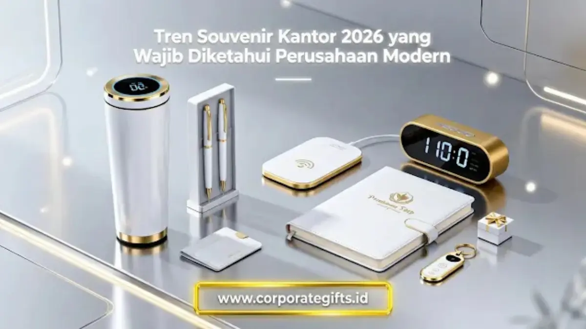

Corporate Gifts ID - Tren souvenir kantor 2026 bergerak ke lima arah utama: produk fungsional untuk pemakaian harian, gadget teknologi portable, material ramah lingkungan, personalisasi identitas brand, dan paket corporate gift yang dikurasi secara lengkap. Pergeseran ini terjadi karena souvenir kini dianggap sebagai alat komunikasi brand yang memperkuat persepsi kualitas, bukan sekadar pelengkap acara perusahaan. Artikel ini membahas kelima tren tersebut secara komprehensif beserta alasan di baliknya, agar manajemen perusahaan dapat merencanakan pengadaan souvenir kantor yang tepat sasaran sepanjang tahun 2026.
Poin Kunci Tren Souvenir Kantor 2026:
- Fungsionalitas Tinggi: Peralihan dari barang dekoratif pajangan menjadi perkakas kerja harian yang memberi manfaat nyata.
- Tech & Smart Desk: Peningkatan adopsi wireless charger, smart tumbler LED, dan perangkat pendukung kerja hybrid.
- Eco-Luxury: Penggunaan material ramah lingkungan (bambu, kraft paper, stainless SUS 304) yang memperkuat citra ESG korporat.
- Bespoke Packaging: Kemasan hardbox magnetik dan personalized sleeve menjadi instrumen storytelling identitas perusahaan.
- Paket Gift Set Terpadu: Minat tinggi terhadap paket kurasi multi-item elegan untuk onboarding kit dan klien VIP.
Pergeseran dari Barang Generik ke Produk Fungsional
Souvenir generik dengan desain seragam dan tanpa fungsi jelas kini mulai ditinggalkan oleh instansi korporat terkemuka. Perusahaan modern lebih memilih produk yang dapat dipakai setiap hari, relevan dengan aktivitas kerja, dan memberi pengalaman nyata bagi penerimanya, sehingga cinderamata tidak berakhir terbengkalai di laci meja.
Contoh Produk Fungsional Souvenir Kantor 2026:
- Tumbler Premium Insulated: Botol minum berbahan stainless steel SUS 304 food-grade dengan insulasi vakum ganda yang menjaga suhu minuman dingin hingga 24 jam dan panas hingga 12 jam.
- Smart Notebook Kulit: Buku agenda dengan cover kulit sintetis premium, dilengkapi slot kartu identitas, kantong dokumen tipis, dan pen loop elastis untuk mendukung kerja hybrid.
- Desk Organizer Minimalis: Rak meja modular untuk merapikan alat tulis, smartphone, dan aksesoris kantor agar lingkungan kerja tetap rapi dan ergonomis.
- Alat Tulis Eksklusif: Ballpoint metal berlapis chrome dengan mekanik putar presisi dan tinta gel halus yang tahan lama untuk penandatanganan berkas penting.
Perubahan ini didorong oleh kebutuhan manajemen untuk memastikan setiap rupiah anggaran pengadaan menghasilkan nilai kemanfaatan nyata sekaligus meningkatkan brand recall setiap kali cinderamata tersebut dipakai di meja kerja maupun saat mobilitas harian.
Produk Teknologi Menjadi Favorit Perusahaan
Teknologi memengaruhi hampir seluruh aspek operasional bisnis modern, termasuk kurasi souvenir kantor. Pada tahun 2026, tren pengadaan merchandise perusahaan didominasi oleh perangkat elektronik kecil yang fungsional, portable, dan sangat relevan dengan gaya hidup profesional yang mobile.
Daftar Souvenir Teknologi Paling Dicari 2026:
- Wireless Charger Fast Charging: Pad pengisi daya nirkabel Qi-compatible berdesain ramping dengan permukaan sentuh berlogo custom.
- Powerbank Compact Fast Charge: Sumber daya cadangan berkapasitas 10.000 mAh dengan port Type-C PD yang aman untuk perjalanan dinas udara.
- Flashdisk Dual Drive Metal: Media penyimpanan USB 3.0 + Type-C OTG berbadan paduan zinc alloy tahan benturan dengan grafir laser nama klien.
- Speaker Mini Portable Bluetooth: Pengeras suara nirkabel berukuran saku dengan kualitas audio jernih untuk kebutuhan rapat virtual santai maupun hiburan.
- Desk Mat & Keyboard Pad Kulit: Alas meja kerja berukuran luas yang tahan cipratan air dan dilengkapi bantalan pergelangan tangan ergonomis.
Produk bernuansa teknologi dinilai jauh lebih berkelas sekaligus secara langsung merefleksikan identitas korporat yang dinamis, modern, dan tanggap terhadap perkembangan transformasi digital.

Kombinasi smart tumbler, wireless charger, notebook eksklusif, dan pen metal dalam gift set berlogo resmi.
Souvenir Eco-Friendly Meningkat Drastis
Kesadaran akan prinsip keberlanjutan lingkungan (ESG - Environmental, Social, and Governance) kini menjadi agenda utama para pemangku kepentingan korporat. Banyak institusi ingin menunjukkan komitmen nyata mereka terhadap kelestarian alam melalui pemilihan merchandise ramah lingkungan yang diproduksi secara bertanggung jawab.
Produk Eco-Friendly yang Sedang Tren:
- Totebag Kanvas & Daur Ulang: Tas jinjing kuat berbahan kain blacu organik atau recycled polyester (rPET) berkapasitas muat laptop.
- Tumbler Bambu & Stainless: Botol minum berbahan luar kayu bambu alami beraksen laser engraving yang mengurangi penggunaan botol plastik sekali pakai.
- Notebook Kertas Kraft Eco-Paper: Buku catatan dari serat kayu daur ulang bersertifikasi FSC dengan tinta cetak kedelai (soy ink).
- Kemasan Biodegradable: Boks pengemas dari karton daur ulang berbahan dasar singkong atau serat jagung yang mudah terurai di tanah.
Tren ini selaras dengan menguatnya kampanye Green Corporate. Souvenir ramah lingkungan membantu perusahaan membangun narasi positif yang konsisten di mata publik, mitra kerja B2B, dan generasi karyawan muda yang peduli lingkungan.
Personalisasi Menjadi Kebutuhan, Bukan Fitur Tambahan
Jika pada dekade sebelumnya personalisasi dianggap sebagai opsi premium yang membutuhkan biaya tambahan, kini sentuhan personal telah menjadi standar wajib dalam industri corporate gifting. Personalisasi digunakan untuk mengukuhkan identitas merek sekaligus memberi apresiasi tulus kepada individu penerima.
Bentuk Personalisasi Souvenir Kantor Paling Diminati:
- Laser Engraving Presisi: Grafir nama penerima pada bodi tumbler, pulpen metal, atau gantungan kunci kulit yang elegan dan tidak mudah luntur.
- Pencetakan UV DTF Full Color: Cetak logo korporat dengan ketajaman warna tinggi yang tahan goresan pada media kaca, kayu, atau plastik.
- Deboss / Emboss Kulit: Penekanan logo perusahaan pada cover buku agenda atau card holder berbahan kulit untuk menghasilkan tekstur timbul mewah.
- Custom Sleeve & Greeting Card: Pita kemasan dan kartu ucapan tertanda tangan direksi yang memberikan sentuhan hangat dan berkesan.
Perusahaan menyadari bahwa souvenir yang dipersonalisasi memberikan ikatan emosional yang jauh lebih dalam, menaikkan perceived value, serta mempertegas profesionalisme institusi di mata para stakeholder.
Packaging Eksklusif Sebagai Bagian dari Storytelling Brand
Tren souvenir kantor 2026 tidak hanya berfokus pada produk fisik di dalam, tetapi juga menitikberatkan pada kemasan luarnya. Pengalaman unboxing kini diposisikan sebagai momen kunci dalam menyampaikan narasi dan nilai-nilai luhur perusahaan kepada klien maupun karyawan.
Jenis Packaging Souvenir yang Populer:
- Hardbox Magnetik Rigid: Kotak kaku mewah berbahan greyboard tebal berlapis art paper bertekstur matte dengan bukaan magnet yang kokoh.
- Custom Die-Cut EVA Foam / Spon Busa: Busa presisi di bagian dalam kotak yang menahan setiap item souvenir agar tertata rapi dan aman selama pengiriman.
- Paper Bag Tebal Laminasi Doff: Tas jinjing kertas bergramasi tinggi dengan tali pita grosgrain yang memberikan impresi formal dan bersih.
Paket Corporate Gift Semakin Diminati
Salah satu pola permintaan paling masif pada tahun 2026 adalah lonjakan pesanan paket hampers & gift set terpadu. Paket bingkisan yang mengombinasikan beberapa item serasi dalam satu boks elegan terbukti terlihat lebih mewah dan bernilai tinggi dibanding membagikan satu jenis barang secara terpisah.
Contoh Paket Corporate Gift Populer 2026:
- Executive Welcome Kit: Kombinasi tumbler stainless SUS 304, leather notebook, dan pen metal rollerball dalam kemasan hardbox hitam matte.
- Tech Productivity Bundle: Wireless charging station, smart tumbler LED sensor suhu, dan flashdisk OTG multifungsi.
- Lifestyle & Wellness Set: Scented candle aromaterapi, tea infuser mug keramik, dan pouch kulit sintetis serbaguna.
Souvenir Digital Mulai Mengisi Ruang Baru
Seiring diterapkannya sistem kerja jarak jauh (remote work) dan model organisasi multinasional, voucher digital dan merchandise virtual mulai diintegrasikan sebagai pelengkap souvenir fisik. Format ini memudahkan distribusi instan lintas kota tanpa kendala logistik berat.
Contoh Souvenir Digital untuk Perusahaan:
- E-Voucher Belanja & Food Delivery: Kupon digital yang dapat digunakan karyawan untuk memenuhi kebutuhan sehari-hari.
- Akses Lisensi Aplikasi Produktivitas: Berlangganan perangkat lunak pendukung kerja atau manajemen waktu selama 6 hingga 12 bulan.
- Program Pelatihan / E-Course Online: Akses ke platform pembelajaran mandiri untuk peningkatan kompetensi profesional anggota tim.
Matriks Komparasi 5 Pilar Tren Souvenir Kantor 2026
Berikut adalah ringkasan perbandingan karakteristik utama dari 5 tren souvenir kantor yang paling dominan di tahun 2026:
| Kategori Tren | Fokus Utama | Contoh Produk | Kelebihan untuk Brand |
|---|---|---|---|
| Produk Fungsional | Perkakas kerja harian | Tumbler SUS 304, Desk Organizer, Agenda Kulit | Retensi penggunaan tinggi, brand recall harian |
| Gadget Teknologi | Perangkat modern & portable | Wireless Charger, TWS, Powerbank Slim | Mencerminkan identitas korporat modern & inovatif |
| Eco-Friendly | Material daur ulang & lestari | Totebag rPET, Notebook Kraft, Sedotan Stainless | Mendukung kepatuhan prinsip ESG & citra peduli bumi |
| Bespoke Packaging | Pengalaman unboxing mewah | Hardbox magnetik, custom sleeve, greeting card | Menaikkan nilai persepsi barang (perceived value) |
| Paket Gift Set | Kurasi multi-item terpadu | Onboarding Kit, VIP Executive Hampers | Sangat formal, elegan, dan siap serah terima |
Alasan Mengapa Tren Souvenir Kantor Berubah Drastis di 2026
Pergeseran besar dalam kurasi souvenir kantor pada tahun 2026 dipicu oleh perpaduan faktor dinamika bisnis dan perubahan perilaku konsumen berikut ini:
1. Persaingan Branding yang Kian Ketat
Di pasar B2B yang kompetitif, cinderamata korporat menjadi media taktis untuk mempertahankan citra positif institusi di benak para pengambil keputusan (decision makers).
2. Pola Kerja Hybrid & Fleksibel
Karyawan yang bergantian bekerja dari rumah (WFH) dan kantor (WFO) membutuhkan perlengkapan kerja yang ringkas, kokoh, dan mudah dibawa berpindah lokasi.
3. Tuntutan Tanggung Jawab Sosial & Lingkungan
Investor dan klien institusi kini menilai mitra bisnis berdasarkan kepedulian lingkungan, termasuk pilihan rantai pasok pengadaan souvenir yang minim limbah.
4. Preferensi Generasi Profesional Baru
Generasi Milenial dan Gen Z yang mendominasi angkatan kerja lebih menghargai fungsionalitas murni, desain estetis minimalis, dan kualitas material daripada barang pajangan tanpa guna.
Kesimpulan
Tren souvenir kantor 2026 menegaskan bahwa pengadaan cinderamata korporat bukan lagi sekadar memilih barang murah yang tampak menarik, melainkan merancang instrumen representasi nilai dan komitmen profesional brand. Mengintegrasikan produk fungsional harian, perangkat teknologi pintar, material ramah lingkungan, dan kemasan berkelas akan memastikan setiap paket souvenir memberikan impresi terbaik bagi penerimanya.
Mengikuti tren ini tidak selalu harus menguras anggaran perusahaan. Kuncinya terletak pada kejelian memilih mitra vendor yang berpengalaman dalam mengurasi paket seminar kit dan corporate gift berstandar B2B yang dapat disesuaikan dengan alokasi budget dan kebutuhan spesifik agenda Anda.